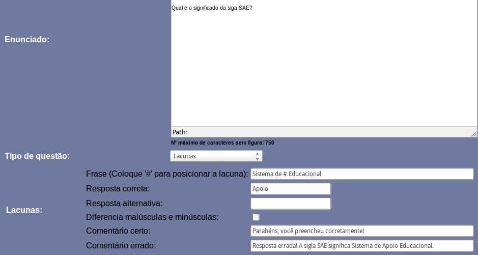
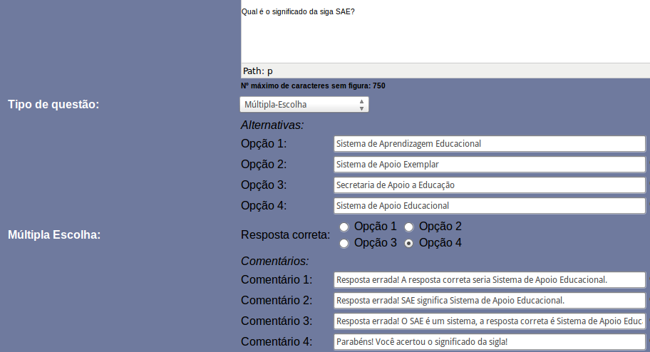
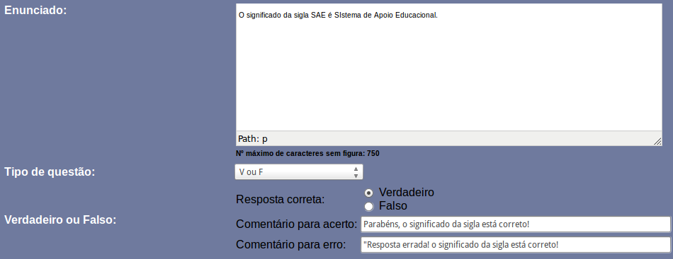
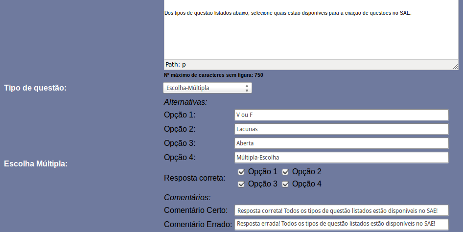
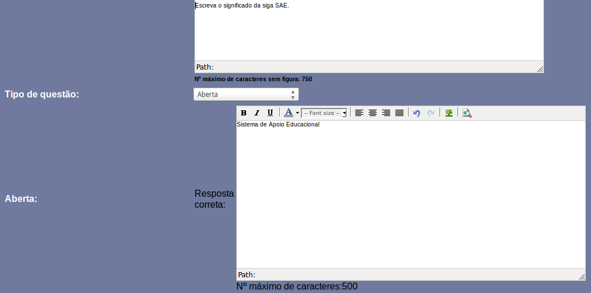
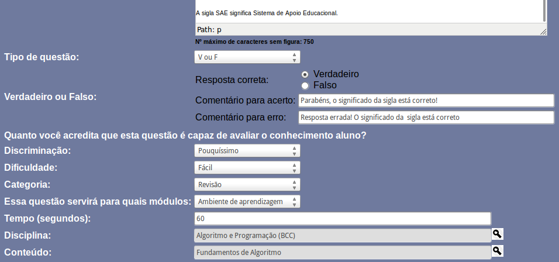

Para cadastrar questões de qualquer tipo, primeiramente você deve estar logado no SAE (Sistema de Apoio Educacional) no perfil de Professor. Para isso, acesse o SAE, preencha o campo Usuário e Senha, selecione a opção Professor e clique em Entrar, caso os dados estejam corretos, você será redirecionado para a página principal do SAE.
Clique na esfera "Questões". Ao clicar nesta esfera, no menu lateral à sua esquerda aparecerão as opções: Questões, Listas, Histórico, Correções e Teste.
Clique na opção "Questões", a primeira do menu lateral. Ao clicar nesta opção, aparecerão logo abaixo dela, as opção Ver, Responder e Análise. Clique na opção "Ver".
Na nova tela que aparecerá, no canto inferior esquerdo, há a opção "Cadastrar" em azul, clique nesta opção.
Aparecerá uma nova tela para que o cadastro da questão seja feito. Primeiramente você deve preencher o campo Enunciado, usando até 750 caracteres, e sem utilizar figuras.
A partir desse passo, clique na opção do tipo de questão a qual você deseja cadastrar, para ver o tutorial com o passo-a-passo de como cadastrá-la.
1. No campo "Tipo de questão" selecione a opção "Lacunas". Aparecerão vários campos de texto logo abaixo.
2. No campo de texto "Frase", coloque a frase a qual você quer que o aluno preencha, e onde você deseja posicionar as lacunas a serem preenchidas coloque um "#", por exemplo, se na frase "Sistema de Apoio Educacional", você quer deixar uma lacuna na palavra "Apoio" (Sistema de _______ Educacional), você deverá preencher o campo da seguinte forma: Sistema de # Educacional.
3. No campo de texto "Respota correta", coloque a resposta correta para o preenchimento da lacuna, no exemplo anterior seria "Apoio".
4. Caso haja alguma outra palavra ou expressão que preencha a lacuna corretamente, além da colocada no campo "Respota Correta", coloque-a no campo "Resposta alternativa".
5. Marque a opção "Diferenciar maiúsculas e minúsculas" caso o fato de o aluno escrever a resposta em letras maiúsculas ou minúsculas faça diferença na correção, como no caso de exemplo é correto tanto o aluno responder "Apoio" quanto "apoio" ou "APOIO", a opção não foi marcada.
6. No campo "Comentário certo", preencha a mensagem que você quer que o aluno visualize caso ele acerte a questão, no caso do exemplo foi preenchida a mensagem "Parabéns, você preencheu corretamente!".
7. No campo "Comentário errado", preencha a mensagem que você quer que o aluno visualize caso ele erre a questão, no caso do exemplo foi preenchida a mensagem "Resposta errada! A sigla SAE significa Sistema de Apoio Educacional."
8. Clique aqui para seguir para o passo-a-passo, onde você verá como preencher os outros campos, que são comuns à todas as questões.

Figura 1 - Exemplo de questão do tipo Lacunas.
1. No campo "Tipo de questão" selecione a opção "Múltipla Escolha". Aparecerão vários campos de texto logo abaixo.
2. No campo de texto "Opção 1", coloque a frase a qual você quer que seja a primeira alternativa, no exemplo, a primeira alternativa é "Sistema de Aprendizagem Educacional". No campo "Opção 2", coloque a frase a qual você quer que seja a segunda alternativa, e assim sucessivamente, como na imagem abaixo (Figura 2).
3. Marque qual é a opção correta, no exemplo a opção correta é a "Opção 4".
4. No campo "Comentário 1", preencha a mensagem que você quer que o aluno que escolheu esta opção visualize, no exemplo, o comentário foi "Resposta errada! A resposta correta seria Sistema de Apoio Educacional.", escolha uma mensagem coerente para cada opção, como no exemplo.
5. Clique aqui para seguir para o passo-a-passo, onde você verá como preencher os outros campos, que são comuns à todas as questões.

Figura 2 - Exemplo de questão do tipo Múltipla Escolha.
1. No campo "Tipo de questão" selecione a opção "V ou F".
2. Na opção "Resposta correta", marque se a frase que você colocou no enunciado é Verdadeira ou Falsa. No caso do exemplo é Verdadeira.
3. Na opção "Comentário para acerto", coloque a frase que você quer que o aluno visualize caso ele marque a opção correta. No exemplo a frase foi "Parabéns, o significado da sigla está correto!".
4. Na opção "Comentário para erro", coloque a frase que você quer que o aluno visualize caso ele marque a opção incorreta. No exemplo a frase foi "Resposta errada! o significado da sigla está correto!".
5. Clique aqui para seguir para o passo-a-passo, onde você verá como preencher os outros campos, que são comuns à todas as questões.

Figura 3 - Exemplo de questão do tipo Verdadeiro ou Falso.
1. No campo "Tipo de questão" selecione a opção "Escolha Múltipla". Aparecerão vários campos de texto logo abaixo.
2. No campo de texto "Opção 1", coloque a frase a qual você quer que seja a primeira alternativa, no exemplo, a primeira alternativa é "V ou F". No campo "Opção 2", coloque a frase a qual você quer que seja a segunda alternativa, e assim sucessivame, como na imagem de exemplo (Figura 4).
3. Marque quais são as opções corretas, caso você tenha colocado somente uma opção correta, você também pode marcar apenas uma opção. No exemplo todas as opções estão corretas.
4. Na opção "Comentário Certo", coloque a frase que você quer que o aluno visualize caso ele marque as opções corretas. No exemplo a frase foi "Resposta correta! Todos os tipos de questão listados estão disponíveis no SAE!".
5. Na opção "Comentário Errado", coloque a frase que você quer que o aluno visualize caso ele não marque todas as opções corretas ou nenhuma delas. No exemplo a frase foi "Resposta errada! Todos os tipos de questão listados estão disponíveis no SAE!".
6. Clique aqui para seguir para o passo-a-passo, onde você verá como preencher os outros campos, que são comuns à todas as questões.

Figura 4 - Exemplo de questão do tipo Escolha Múltipla.
1. No campo "Tipo de questão" selecione a opção "Aberta". Aparecerá uma grande caixa de texto logo abaixo, como a do Enunciado.
2. Na caixa de texto escreva a resposta referente ao enunciado que você colocou para a questão, utilizando até 500 caracteres. Como esta é uma questão discursiva, a correção não é automática, isto é, o professor deverá corrigi-la.
3. Clique aqui para seguir para o passo-a-passo, onde você verá como preencher os outros campos, que são comuns à todas as questões.

Figura 5 - Exemplo de questão do tipo Aberta.
Preenchendo os demais campos
Na opção de "Discriminação" coloque o quanto esta questão é relevante para avaliação do aluno, isto é, o fato do aluno acertar esta questão significa que ele sabe muitíssimo, muito, pouco ou pouquíssimo sobre o conteúdo?
Na opção "Dificuldade", coloque a dificuldade da questão, se é fácil, média ou difícil.
Na opção "Categoria", vocé deverá indicar se a questão é de Revisão, indicando que o exercício é a revisão de um conteúdo abordado em sala de aula, de Fixação, indicando que o exercício exige que o aluno reflita sobre a situação e aplicação do conteúdo explorado, ou Avaliativa, que só poderá ser disponibilizada ao aluno
através de listas de exercícios.
Marque para quais módulos a questão servirá, se será apenas para o ambiente de aprendizagem, onde o aluno responde questões para exercitar seu conhecimento sobre o conteúdo, ou para o ambiente de avaliação, onde o aluno responde testes avaliativos, ou para ambos.
Na opção "Tempo (segundos)", coloque o tempo médio de respota da questão em segundos, por exemplo, se você acha que um aluno com conhecimento do conteúdo demora 1 minuto para responder a questão, coloque 60 segundos, como na imagem do exemplo (Figura 5).
Na opção "Disciplina", selecione a disciplina a qual a questão é referente, e posteriormente, selecione também o conteúdo sobre o qual a disciplina aborda.

Figura 6 - Exemplo de questão do tipo Verdadeiro ou Falso com preenchimento de todos os campos.
Agora, clique em "Visualizar" para ver como a questão ficou, se a visualização não foi gerada, verifique se você se esqueceu de preencher algum campo. Caso haja algum erro, clique em corrigir para voltar aos dados da questão, caso esteja tudo correto, clique em "Confirmar" e sua questão estará cadastrada.